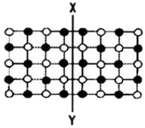
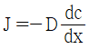
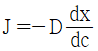
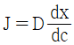
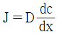
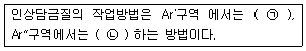
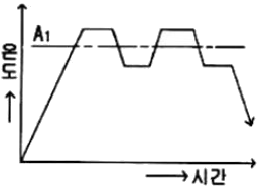

금속재료산업기사 (2016-05-08 기출문제)
1과목: 금속재료
1. 화이트메탈(White metal)의 주성분이 아닌 것은?
- Pb
- Sn
- Sb
- Pt
(정답률: 71%)

2. 상온 또는 가열된 금속을 실린더 모양의 컨테이너에 넣고 한 쪽에 있는 램에 압력을 가하여 밀어 내어 봉, 관, 형재 등의 가공방법은?
- 전조
- 단조
- 압출
- 프레스
(정답률: 85%)
3. 강철에 비해 주철의 성질 중 가장 부족한 것은?
- 주조성
- 유동성
- 수축성
- 인장강도
(정답률: 74%)
4. 리드 프레임(Lead frame)재료에 요구되는 성능이 아닌 것은?
- 재료를 보다 작고 엷게 하기 위하여 강도가 낮을 것
- 재료의 치수정밀도가 높고 잔류응력이 작을 것
- 본딩(bonding)을 위한 우수한 도금성을 가질 것
- 고집적화에 따라 열방산이 좋을 것
(정답률: 78%)
5. 입자가 미세한 요업재료로서 가볍고 내마모성, 내화학성이 우수하여 자동차 엔진 등에 사용되는 가장 적합한 재료는?
- 코비탈륨
- 알드레이
- 파인세라믹스
- 하이드로 날륨
(정답률: 60%)
6. 순 구리(Cu)에 대한 설명 중 틀린 것은?
- 전성이 좋다.
- 가공하기 쉽다.
- 전기 전도율이 좋다.
- 연신율이 낮으며, 경도가 높다.
(정답률: 86%)
7. Ni의 자기변태온도는 약 몇 ℃ 인가?
- 210℃
- 368℃
- 768℃
- 1150℃
(정답률: 64%)
8. 니켈, 철 합금으로 바이메탈, 시계진자에 사용하는 불변강은?
- 인바
- 알니코
- 애드미럴티
- 마르에이징강
(정답률: 81%)
9. 오스테나이트(austenite)와 시멘타이드(Fe3C)와의 기계적 혼합조직은?
- 펄라이트(pearlite)
- 베이나이트(bainite)
- 마텐자이트(martensite)
- 레데뷰라이트(ledeburite)
(정답률: 62%)
10. Cr계 스테인리스강의 취성에 대한 설명으로 틀린 것은?
- 고온취성은 약 950℃ 이상에서 급냉할 때 나타나는 취성이다.
- 저온취성은 오스테나이트 강에 나타나며 페라이트 강에서는 나타나지 않는다.
- 475℃ 취성은 Cr 15% 이상의 강종을 370~540℃로 장시간 가열하면 취화하는 현상이다.
- σ취성은 815% 이하 Cr 42~2%의 범위에서 σ상의 취약한 금속간 화합물로 존재하여 취성을 일으킨다.
(정답률: 54%)
11. 인성에 대한 설명으로 틀린 것은?
- 인성과 충격저항은 상관관계가 없다.
- 충격에 대한 재료의 저항을 인성이라고 한다.
- 인성이 좋은 재료가 일반적으로 충격인성이 크다.
- 강인성의 정도를 측정하기 위해 충격시험을 한다.
(정답률: 81%)
12. 다음 중 준금속(Metalloi)에 해당되는 것은?
- Fe
- Ni
- Si
- Co
(정답률: 61%)
13. 금속의 가공도에 따른 기계적 성질을 설명한 것 중 틀린 것은?
- 가공도가 증가할수록 연신율은 감소한다.
- 가공도가 증가할수록 항복강도는 증가한다.
- 가공도가 증가할수록 단면수축은 증가한다.
- 가공도가 증가할수록 인장강도는 증가한다.
(정답률: 50%)
14. 철광석을 용광로 속에서 코크스로 환원시켜 제련시킨 것은?
- 순철
- 강철
- 선철
- 탄소강
(정답률: 77%)
15. 합금주철에서 각각의 합금원소가 주철에 미치는 영향으로 옳은 것은?
- Ni은 탄화물의 생성을 촉진한다.
- Cr은 강력하게 흑연화를 촉진한다.
- Mo은 인장강도, 인성을 향상시킨다.
- Si은 강력하게 Fe3C를 안정화시킨다.
(정답률: 60%)
16. Zn 40% 내외의 6:4 황동으로 인장강도가 크며 열교환기, 열간 단조품 등으로 사용되는 황동은?
- 톰백
- 포금
- 문쯔메탈
- 센더스트
(정답률: 73%)
17. 합금강의 특징을 설명한 것 중 옳은 것은?
- 탄소강에 비해 담금질성이 좋지 않아 대형부품은 깊이 경화할 수 없다.
- 담금질성이 좋지 않아 항상 수냉을 하여야 하기 때문에 잔류응력이 높아 인성이 낮다.
- Fe3C에 합금원소가 고용되거나 특수탄화물을 형성하여 경도를 낮추며 내마모성이 나빠진다.
- 특수탄화물은 오스테나이트화 온도에서 고용속도가 작아 미용해탄화물은 오스테나이트 결정립의 조대화를 방지한다.
(정답률: 56%)
18. 탄소강 중의 인(P)성분에 의해 일어나는 취성은?
- 청열취성
- 저온취성
- 적열취성
- 입간취성
(정답률: 65%)
19. 다음 중 초소성 및 그 재료에 대한 설명으로 틀린 것은?
- 결정립의 형상은 등축(等軸)이어야 한다.
- Al 합금 중에는 Supral 100이 초소성으로 많이 사용된다.
- 초소성재료의 입계구조에서 모상입계는 저경각(底硬角)인 것이 좋다.
- 초소성이란 어느 응력 하에서 파단에 이르기까지 수백 % 이상의 연신을 나타내는 현상이다.
(정답률: 59%)
20. 다음의 금속과 비중이 옳게 연결된 것은?
- Al : 1.74
- Mg : 2.74
- Fe : 6.42
- Ni : 8.90
(정답률: 66%)
2과목: 금속조직
21. 다결정재료의 결정입계에 의한 강화방법에 대한 설명으로 틀린 것은?
- 결정입계가 많을수록 재료의 강도는 증가한다.
- 결정의 입도가 작아질수록 재료의 강도는 증가한다.
- 결정입계에 의한 강화는 결정립 내의 슬립이 상호 간섭함으로써 발생된다.
- Hall-Petch식에 의하면 결정질 재료의 결정립의 크기가 작아질수록 재료의 강도는 감소한다.
(정답률: 77%)
22. 대기압하에서 2원계 합금의 공정점에서 자유도는?
- 0
- 1
- 2
- 3
(정답률: 53%)
23. 주형에서 금속의 응고 과정에 대한 설명으로 틀린 것은?
- 순금속이 응고하면 결정립들은 안쪽에서 바깥으로 성장한다.
- 용융금속이 응고하면 용기의 벽쪽에서부터 내부로 칠층, 주상정, 입상정으로 성장한다.
- 용융금속 중에서 용기의 벽에 접촉되어 있던 금속이 급속히 냉각되어 응고 이하의 온도로 심하게 과냉된다.
- 용융금속 속에 있는 열은 용기의 벽을 통하여 외부로 계속 방출되므로 용기의 용융금속의 온도는 용기 벽에서 가장 낮고 내부로 들어갈수록 높아진다.
(정답률: 65%)
24. (111)슬립면과 [110]면의 slip system을 가지는 금속으로만 이루어진 것은?
- Cu, Pd, Pt
- Sr, Al, Hf
- Cr, Fe, Mo
- Ni, Ag, Co
(정답률: 60%)
25. 공석강이 300℃ 부근의 등온변태에 의해 생성되는 조직으로 침상구조를 이루고 있는 것은?
- 마텐자이트
- 레데뷰라이트
- 하부 베이나이트
- 상부 베이나이트
(정답률: 68%)
26. 다음 중 전위와 관계가 없는 것은?
- 조그(Jog)
- 프랭크 리드(Frank-read) 원
- 프렌켈 결함(Frenkel defect)
- 상승 운동(Climbing motion)
(정답률: 56%)
27. 단위격자의 격자상수가 a=b≠c의 관계를 갖는 결정계는?
- 입방정계
- 육방정계
- 사방정계
- 삼사정계
(정답률: 58%)
28. 냉간가공을 한 금속의 풀림처리에서 회복(recovery) 현상이 일어나는 가장 큰 이유는?
- 새로운 결정이 생기기 때문에
- 전위의 밀도가 감소되기 때문에
- 새로운 전위가 생기기 때문에
- 원자가 재결합이 일어나기 때문에
(정답률: 52%)
29. 철에서 C, N, H, B의 원자가 이동하는 확산기구는?
- 격자간 원자 기구
- 공격자점 기구
- 직접교환 기구
- 링 기구
(정답률: 75%)
30. 금속이 전기가 잘 통하는 가장 큰 이유는?
- 전위가 있기 때문이다.
- 자유전자를 갖기 때문이다.
- 입방정을 하고 있기 때문이다.
- 금속은 연성이 좋기 때문이다.
(정답률: 80%)
31. 용융 금속의 응고시 핵생성 속도에 가장 영향을 크게 미치는 것은?
- 시효
- 수량
- 전위
- 냉각속도
(정답률: 73%)
32. 다이아몬드(diamond)는 무슨 결합인가?
- 이온결합
- 금속결합
- 공유결합
- 반데르발스 결합
(정답률: 67%)
33. 다음 그림에서 X-Y축을 경계로 좌우측의 원자들을 완전한 규칙배열로 되어 있으나 전체로 보면 X-Y축을 경계로 하여 대칭으로 되어 있으나 전체로 보면 X-Y축을 경계로 하여 대칭으로 되어 있다. 이러한 원자배열의 구역은?

- 완화 구역
- 전이 구역
- 자성 구역
- 역위상 구역
(정답률: 68%)
34. 냉간가공 하였을 때 물리적, 기계적 성질의 변화가 옳은 것은?
- 인성이 증가한다.
- 전기저항은 증가한다.
- 연신율은 증가한다.
- 인장강도가 감소한다.
(정답률: 61%)
35. 금속에 있어서 확산을 나타내는 Fick의 제1법칙의 식으로 옳은 것은? (단, J는 농도구배, D는 확산계수, C는 농도, X는 위치(거리)이고, 농도의 시간적 변호는 고려하지 않는다.)




(정답률: 71%)
36. 다음 2원합금 상태도의 반응식 중 포정 반응인 것은?
- 액상(L1) ⇄ 고상(A) + 고상(B)
- 액상(L1) ⇄ 고상(L2) + 고상(A)
- 고상(A) + 액상(L1) ⇄ 고상(B)
- 고상(A) + 고상(B) ⇄ 고상(C)
(정답률: 69%)
37. 인발 가공한 알루미늄선의 인발 축방향의 우선결정 방위는?
- [111]
- [100]
- [010]
- [001]
(정답률: 38%)
38. 왕의 계면(interface)에 대한 설명 중 옳은 것은?
- 계면에너지가 작은 면의 성장속도는 빠르다.
- 원자간 결합에너지가 클수록 계면에너지는 크다.
- 정합석출물과 기지의 결정구조와는 관련이 없다.
- 표면에너지를 최소화하기 위해서는 석출물이 침상이어야 한다.
(정답률: 59%)
39. 금속간 화합물의 특징을 설명한 것 중 틀린 것은?
- 변형하기 쉬우며 연하다.
- 성분금속의 특성을 잃는다.
- 간단한 원자수의 정수비로 결합한다.
- 일반적으로 성분금속보다 용해온도가 높다.
(정답률: 60%)
40. 전위의 운동에 의해 생기는 조그(jog)에 대한 설명으로 틀린 것은?
- 전위선이 상승하거나 서로 교차할 때에 생성된다.
- 두 슬립면의 경계에서 전위선이 계단상으로 된 부분이다.
- 결정의 변형 부분과 변형되지 않은 부분이 대칭을 이루고 있는 것이다.
- 전위선의 일부가 어느 슬립면에서 옆의 슬립면 위로 이동할 때 생성된다.
(정답률: 54%)
3과목: 금속열처리
41. 다음 ()안에 알맞은 내용은?

- ㉠ 급냉, ㉡ 급냉
- ㉠ 급냉, ㉡ 서냉
- ㉠ 서냉, ㉡ 급냉
- ㉠ 서냉, ㉡ 서냉
(정답률: 75%)
42. 표면경화법을 물리적 방법과 화학적 방법으로 나눌 때 물리적 표면경화법에 해당하는 것은?
- 질화법
- 침탄법
- 화염경화법
- 금속침투법
(정답률: 67%)
43. 탈탄의 방지대책으로 틀린 것은?
- 강의 표면에 도금을 한다.
- 중성분말제 속에서 가열한다.
- 고온에서 장시간 가열한다.
- 분위기 가스 내에서 진공 가열 한다.
(정답률: 77%)
44. 그림과 같은 구상화 어닐링 방법에서 A1 변태점 이상으로 가열하는 이유는?

- 망상 Fe3C를 없애기 위하여
- 층상 Fe3C를 석출시키기 위하여
- Fe3C를 분리 및 생성시키기 위하여
- 펄라이트 생성 및 판상화시키기 위하여
(정답률: 73%)
45. 고속도 공구강의 담금질 온도가 상승함에 따라 나타나는 현상이 아닌 것은?
- 잔류 오스테나이트의 양이 감소한다.
- 충격치, 항절력 등의 인성이 저하한다.
- 오스테나이트의 결정립이 조대하게 된다.
- 탄화물의 고용량이 증대하여 기지 중의 합금원소가 증가한다.
(정답률: 40%)
46. 마텐자이트(martensite)변태에 관한 설명으로 틀린 것은?
- 마텐자이트 변태를 하게 되면 표면에 기복이 발생한다.
- 펄라이트나 베이나이트 변태와 달리 확산을 수반하지 않는다.
- 마텐자이트 조직은 모체인 오스테나이트 조성과 동일하다.
- 마텐자이트 형성은 변태 시간에 따라 진행되고 온도와는 무관하다.
(정답률: 72%)
47. 강의 열처리에서 일반적으로 담금질성을 나쁘게 하는 원소가 아닌 것은?
- B
- S
- Pb
- Te
(정답률: 64%)
48. 이온질화법의 특징으로 옳은 것은?
- 400도 이하의 저온에서 질화가 가능하며, 질화속도가 비교적 빠르다.
- 미세한 흠의 내면, 긴 부품의 내면 등에 균일한 질화가 가능하다.
- 처리부품의 정확한 온도 측정이 가능하며, 급속냉각이 가능하다.
- 오스테나이트계 스테인리스강이나 Ti 등에는 질화가 불가능하다.
(정답률: 37%)
49. 진공로 내부에 단열하는 구비조건이 아닌 것은?
- 열용량이 커야 한다.
- 흡습성이 없어야 한다.
- 열적 충격에 강해야 한다.
- 방사열을 완전히 반사시키는 재료이어야 한다.
(정답률: 38%)
50. 침탄 경화층의 깊이 표시방법 중 경도시험에 의한 측정방법으로 시험하중 0.3kgf으로 측정하여 유효경화층 깊이가 1.1mm의 경우를 표시하는 기호는?(오류 신고가 접수된 문제입니다. 반드시 정답과 해설을 확인하시기 바랍니다.)
- CD - H0.3 - T 1.1
- CD - H0.3 - E 1.1
- CD - M - T 1.1
- CD - M - E 1.1
(정답률: 55%)
51. 보통탄소강의 오스테나이트 조직에 대한 설명 중 옳은 것은?
- 금속간화합물이다.
- 면심입방격자이다.
- 최대 고용 탄소함량은 0.02% 이하이다.
- A1 변태점 이하에서만 존재하는 조직이다.
(정답률: 61%)
52. 상온 가공한 황동제품의 자연균열(season crack)을 방지하기 위하여 실시하는 열처리 방법은?
- 뜨임
- 담금질
- 저온풀림
- 노멀라이징
(정답률: 59%)
53. 담금질에 사용되는 냉각제에 대한 설명 중 틀린 것은?
- 냉각제에는 물, 기름 등이 있다.
- 물은 차가울수록 냉각 효과가 크다.
- 기름은 상온 담금질일 경우 60~80℃ 정도가 좋다.
- 증기막을 형성할 수 있도록 교반 또는 NaCl, NaCl2 등의 첨가제를 첨가한다.
(정답률: 61%)
54. 탈탄에 대한 설명으로 틀린 것은?
- 담금질 균열, 변형이 발생한다.
- 내피로 강도의 저하, 열피로가 발생한다.
- 수분이 있는 경우 현저하게 발생한다.
- γ구역보다 α구역에서 현저히 발생한다.
(정답률: 60%)
55. 강의 심냉(sub-zero)처리에서 얻어지는 효과가 아닌 것은?
- 공구강의 경도 증가
- 정밀기계 부품 조직의 안정화
- 내마모 및 내피로성의 향상
- 정밀기계 부품의 연신율 및 취성 증가
(정답률: 71%)
56. 펄라이트 생성에 대한 설명 중 틀린 것은?
- 공석강을 서냉 시 생성된다.
- 고용체와 금속간 화합물이 혼합되어 있다.
- 오스테나이트의 결정입계에서 Fe3C의 핵이 발생한다.
- 오스테나이트에서 등온 냉각시 Ms직상에서 생성된다.
(정답률: 54%)
57. Al합금에서 주괴(鑄塊)를 열간가공에 앞서 고온장시간 가열로 균질화하고 열간가공성을 향상시키기 위해 균열(均熱)처리 하여 얻어지는 결과가 아닌 것은?
- 방향성 증가
- 담금질 향상
- 결정립의 미세화
- 기계적 성능의 개선
(정답률: 57%)
58. 연속로에 해당되지 않는 것은?
- 푸셔로
- 피트로
- 컨베이어로
- 세이커 하스로
(정답률: 61%)
59. 기어나 스프링 등 변형을 일으켜서는 안되는 제품 또는 얇은 제품을 금형에 고정하여 담금질하는 방법은?
- 분사 담금질
- 인상 담금질
- 열욕 담금질
- 프레스 담금질
(정답률: 60%)
60. 강의 연속냉각 변태에서 임계냉각 속도란?
- 마텐자이트만을 얻기 위한 최소의 냉각속도
- 투르스타이트 조직을 얻기 위한 냉각속도
- 마텐자이트에서 오스테나이트로 변태개시속도
- 오스테나이트 상태에서 상온까지 계속 냉각시키는 속도
(정답률: 59%)
4과목: 재료시험
61. 현미경의 광학 계통도에 속하지 않는 것은?
- 광원
- 계조계
- 반사경
- 광선조리개
(정답률: 65%)
62. 브리넬 경도시험에서 하중이 3000kgf 강구를 10mm를 사용하여 시험하였을 때 압흔의 지름이 4.5mm일 경우 경도는 약 얼마인가?
- 159 gf/mm2
- 169 gf/mm2
- 179 gf/mm2
- 189 gf/mm2
(정답률: 46%)
63. 다음 중 강의 재질을 판별할 수 있는 방법이 아닌 것은?
- 열 분석법
- 페릿 시험
- 불꽃 시험
- 현미경 조직 검사법
(정답률: 46%)
64. 인장 시험편 물림 장치의 물림부 구비조건이 아닌 것은?
- 취급이 편리해야 한다.
- 시험편에 심한 변형을 주어서는 안된다.
- 인장하중 이외에 편심 하중이 가해져야 한다.
- 시험 중 시험편은 시험기 작동 중심선에 있어야 한다.
(정답률: 78%)
65. 두 개 이상의 물체가 압력하에 접촉하면서 상대운동을 할 때 물체의 중량이 감소되는 양을 측정하는 시험은?
- 굴곡시험
- 전단시험
- 마모시험
- 압축시험
(정답률: 63%)
66. 한국산업표준(KS V 0801)의 4호 인장시험편 제작에서 지름(D)과 표점거리(L)는 몇 mm로 하는가?
- 지름(D) : 10mm, 표점거리(L) : 60mm
- 지름(D) : 14mm, 표점거리(L) : 50mm
- 지름(D) : 20mm, 표점거리(L) : 200mm
- 지름(D) : 24mm, 표점거리(L) : 220mm
(정답률: 61%)
67. 철강 재료에 사용하는 부식제로 가장 적합한 것은?
- 5% 염산 수용액
- 질산 1~5%와 알콜용액
- 수산화나트륨 20g과 물
- 과황산 암모늄 10% 수용액
(정답률: 69%)
68. 방사선투과시험에 사용되는 것이 아닌 것은?
- 증감지
- 투과도계
- 접촉매질
- 서베이미터
(정답률: 50%)
69. 용제제거성 염색침투탐상검사를 수행할 대의 공정이 아닌 것은?
- 전처리
- 산화처리
- 제거처리
- 침투처리
(정답률: 69%)
70. S-N 곡선에서 S와 N은 각각 무엇을 의미하는가?
- S : 반복응력, N : 반복 횟수
- S : 피로한도, N : 반복 횟수
- S : 시편크기, N : 반복 횟수
- S : 시편크기, N : 반복 횟수
(정답률: 68%)
71. 무색, 무미, 무취로서 연료의 불완전 연소로 인하여 생성되는 것으로 인체에 해로운 가스는?
- CO
- SO2
- NH4
- Cl2
(정답률: 75%)
72. 다음 중 조직량 측정법이 아닌 것은?
- 면적(area)측정법
- 직선(line)측정법
- 점(point)측정법
- 직각(right angle)
(정답률: 73%)
73. 초음파 탐상검사의 주사방법중 1탐촉자(경사각탐촉자)에 의한 응용주사는?
- 전후 주사
- 좌우 주사
- 목돌림 주사
- 지그재그방향 주사이다.
(정답률: 58%)
74. 비금속 개재물(Non-metallec inclusion)에 대한 설명으로 틀린 것은?
- 응력집중의 원인이 된다.
- 피로한계를 저하시킨다.
- 철갈 내에 개재하는 고형체의 불순물이다.
- 투과 전자 현미경 시험으로만 발견할 수 있다.
(정답률: 75%)
75. 충격시험(impact test)은 어떤 성질을 알기 위한 시험인가?
- 충격과 피로
- 인성과 취성
- 경도와 강도
- 강도와 내마모성
(정답률: 65%)
76. 압축시험의 설명으로 틀린 것은?
- 인장시험과 반대 방향으로 하중을 작용한다.
- 압축시험은 압축력에 대한 재료의 저항력을 시험하는 것이다.
- 압축강도(σc)=시험면의 단면적을 압축강도로 나눈 값이다.
- 시험방법을 압축과 탄성 측정으로 나눌 때 압축을 측정하는 경우 단주형 시험편을 주로 사용한다.
(정답률: 47%)
77. 작은 금속조각을 금속현미경으로 조직 검사하는 절차를 옳게 나타낸 것은?
- 시편채취→부식→연마→마운팅→관찰
- 시편채취→마운팅→연마→부식→관찰
- 시편채취→연마→관찰→부식→마운팅
- 시편채취→관찰→연마→부식→마운팅
(정답률: 72%)
78. 원통형 스프링에 압축하중이 작용할 때 스프링소선(wire)에 발생하는 응력은?
- 굽힘응력과 압축응력
- 압축응력과 전단응력
- 수축응력과 굽힘응력
- 전단응력과 비틀림응력
(정답률: 43%)
79. 크리프 시험 장치에 해당되지 않는 것은?
- 하중장치
- 시험편 검사장치
- 변형률 측정 장치
- 가열로 온도측정 및 조정장치
(정답률: 40%)
80. 다음 중 동적 시험법에 해당되는 것은?
- 피로시험
- 인장시험
- 비틀림시험
- 크리프시험
(정답률: 45%)